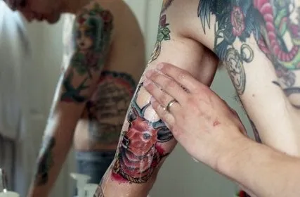

Cómo curar tus tatuajes
Obviamente, para que un tatuaje quede bien esteticamente y se vea lindo y oscuro, ademas del buen trabajo del tatuador, es necesario hidratarlo y cicatrizarlo. Es importante tener en cuenta que el tatuaje es algo que va a durar para toda la vida en tu piel.
No es algo menor la curación, porque de esto puede depender como quede el trabajo a largo plazo. Va a ser necesario que adquieras en tu farmacia mas cercana una crema hidratante SIN PERFUME y un jabon blanco neutro o de glicerina, también sin perfume.
Luego de haber salido del salón de tatuaje, tenes que dejarte el film puesto durante 2hs, para que supure los excedentes de tinta la piel. Una vez retirado el film, pasamos al proceso de limpieza, el cual debemos llevarlo a cabo entre 3 y 4 veces al día durante 2 semanas.
Para la limpieza o cura del tatuaje, tenemos que usar el jabon, mojarlo en agua tibia y frotarlo hasta hacer espuma, y esa espuma la vamos a frotar sobre la herida. Si se salen algunos pedacitos negros, no es nada, se está saliendo la capa superior de la piel, que se caigan solos, no hay que arrancarlos.
Para secarlo, en lo posible tenemos que usar papel de cocina, que es lo que mejor absorbe el agua, es importante secarlo bien para evitar hongos e infecciones. La tecnica de secado es apoyando el papel sobre el tatuaje, no frotandolo.
Luego de secarlo bien, colocamos un poco de crema hidratante en el dedo y lo pasamos por el tatuaje hasta cubrirlo de forma completa. Tiene que ser una película delgada sobre la piel, para no sobrehidratarlo. Lo dejamos en lo posible al descubierto para que la herida absorba mejor la crema.
Si sentis fiebre, dolor, hinchazon, pus, lesiones rojas alrededor y areas de tejido duro y elevado en el tatuaje es porque tenés una infección. La misma puede ser producida por negloigencia del tatuador sobre las precauciones que debe tomar o un mal cuidado. Lo ideal en estos casos es ir a una guardia dermatologica o a un medico para tener un diagnostico adecuado, ya que el tratamiento puede ser distinto dependiendo de lo que haya sucedido.
De todas formas, siempre es importante seguir las indicaciones que te dé tu tatuador luego de terminar el trabajo, ya que es la persona que mejor el trabajo que realizó.